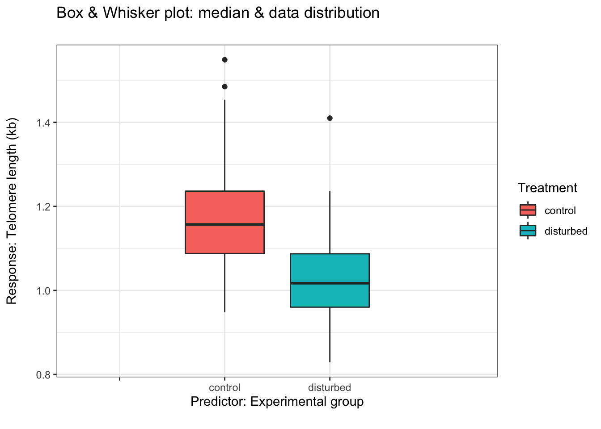

## Loading required package: ggplot2##
## Attaching package: 'cowplot'## The following object is masked from 'package:ggpubr':
##
## get_legend##
## Attaching package: 'dplyr'## The following objects are masked from 'package:stats':
##
## filter, lag## The following objects are masked from 'package:base':
##
## intersect, setdiff, setequal, union## Warning: NAs introduced by coercionmedians <- parus_telos_nest %>%
group_by(Treatment) %>%
summarize(median = median(telomere.length),
max = max(telomere.length),
min = min(telomere.length),
upper = fivenum(parus_telos_nest$telomere.length)[4],
lower = fivenum(parus_telos_nest$telomere.length)[2])## `summarise()` ungrouping output (override with `.groups` argument)ggplot(data = parus_telos_nest,
aes(y = telomere.length,
x = Treatment,
fill = Treatment)) +
geom_boxplot() +
scale_x_discrete(limits = c("","control","disturbed","")) +
theme(legend.position="none") +
ggtitle("Box & Whisker plot: median & data distribution\n") +
xlab("Predictor: Experimental group\n") +
ylab("Response: Telomere length (kb)\n") + theme_bw()